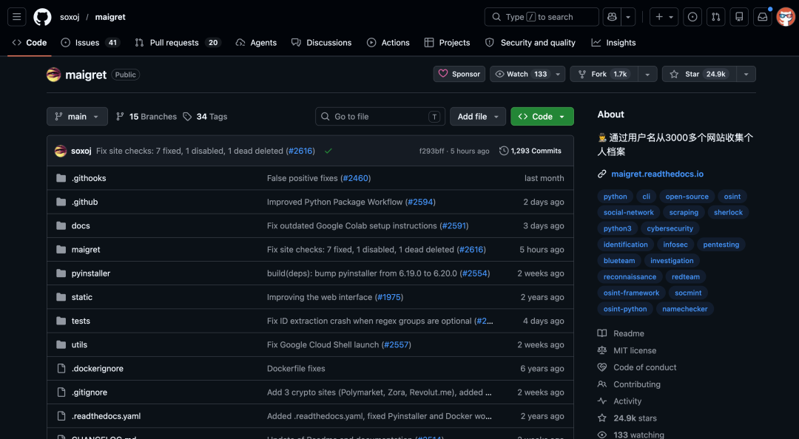
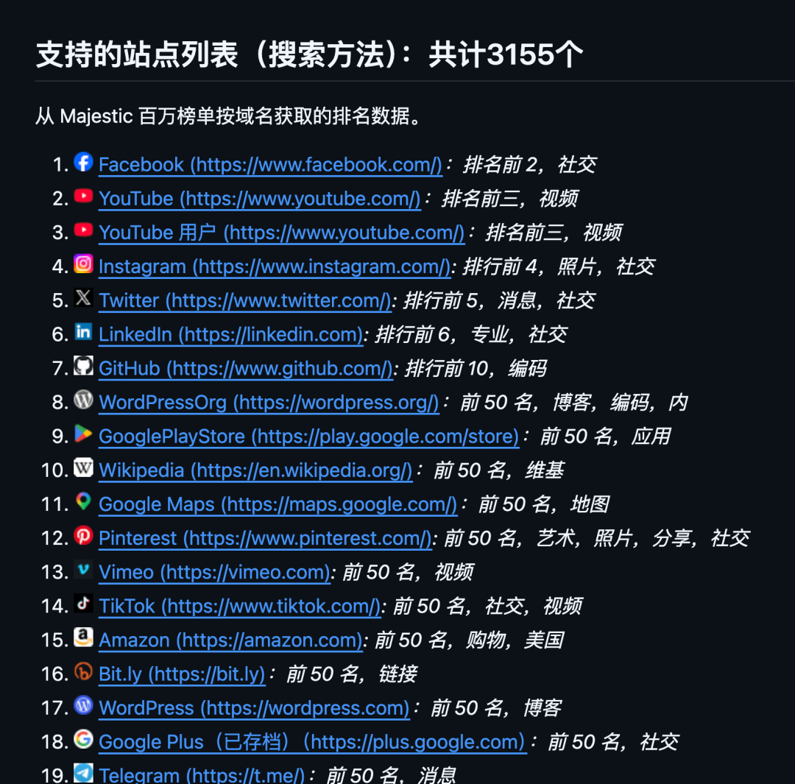
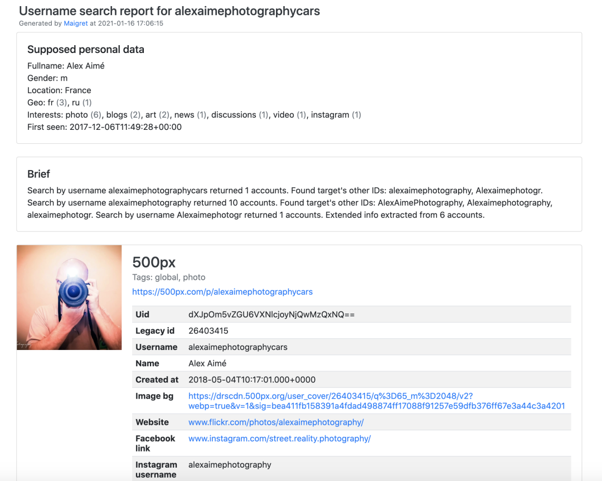
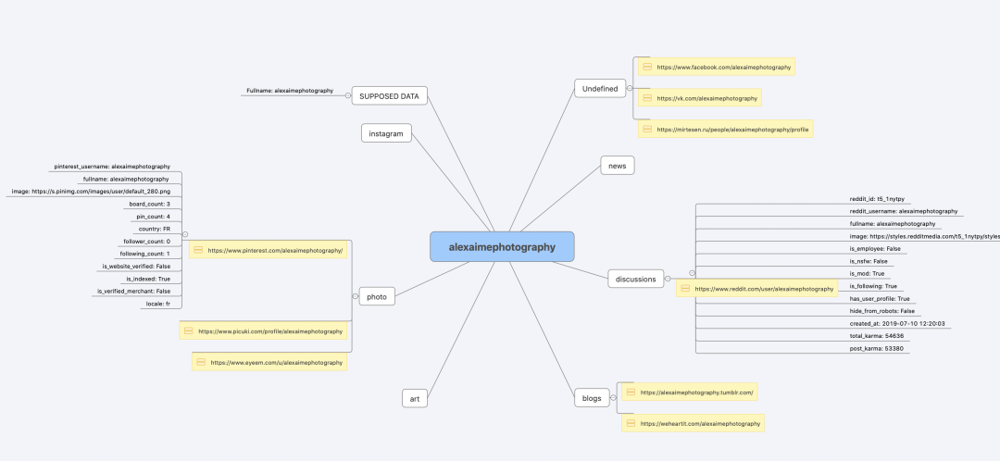

Maigret：开源 OSINT 用户名搜索工具，3000+ 站点递归挖数字画像
来源：微信公众号 归档日期：2026-05-12 抓取状态：成功 原文字符：2972｜配图：6 张
摘要速览
想知道一个用户名在互联网上的信息暴露面——注册了哪些平台、留下了哪些公开痕迹，无需 API Key、一条命令扫遍 3000+ 站点。
核心内容
- 核心功能：输入用户名，自动扫描 3000+ 网站是否存在该账号，汇总成完整报告。默认扫全球流量前 500 站点，加
-a参数全量扫 3000+ - 递归搜索：发现新的关联 ID 或用户名后自动用新线索继续扩线，一条线索可滚出整个账号关系网
- AI 分析模式：2026 年 4 月新增，接入 LLM 对原始搜索结果做智能梳理，提取有价值的关联信息，而非单纯罗列账号列表
- 报告格式丰富：HTML、PDF、XMind、JSON、CSV + 交互式 D3 图谱（浏览器可视化），自带 Web 界面
- 工程质量：站点数据库每 24 小时从 GitHub 自动拉取更新，离线降级到内置库；支持按国家/类型标签筛选站点；可作为 Python 库嵌入工作流
- 商业背书：已被 Social Links、Crimewall、UserSearch 等专业 OSINT 调查平台商业化使用；2.4 万 Star
可执行启发
（待补充）
我的想法
（待补充——可以思考：① 在账号安全风控场景下，Maigret 的递归搜索能力能否作为溯源链路的辅助工具？② 结合 AI 分析模式，如何将输出报告结构化进 Harness 流程做自动化情报整理？）
为什么有用
做安全研究、账号溯源、或者自查自身信息暴露面时，Maigret 是最快的起点——免费、无需注册、命令行秒装。递归搜索功能让它远超普通"用户名查询"工具，能自动扩线挖关联账号。对账号安全方向的人来说值得收藏备用。
具体步骤
- 安装：
pip install maigret - 基础搜索：
maigret 用户名 - 全量扫描：
maigret -a 用户名 - Web 界面版：
docker run -p 5000:5000 soxoj/maigret:web，浏览器打开http://localhost:5000 - 作为 Python 库引用：直接
import maigret，CLI 是异步函数的薄封装
适用 / 不适用场景
- 适用：安全研究、账号溯源调查、自查个人信息暴露面、OSINT 调查流程集成
- 不适用：需要实时监控（非轮询型）、私信/内容爬取（仅覆盖公开账号存在性）、违反当地法律的使用场景
原文：逛逛 GitHub（逛逛）
你有没有想过，自己在网上到底注册过多少账号？
大多数人就那几个用户名换来换去，用久了你会发现，各个平台都能找到你的影子。
如果有人拿你的常用用户名去系统性地搜一圈，你的数字画像可能比你想象的要完整得多。
最近逛 GitHub 发现一个叫 Maigret 的项目，已经在开源情报圈子里火了挺久了，目前 2.4 万 Star。
名字来源于比利时作家西默农笔下的经典侦探角色梅格雷，光看这命名就知道它的定位了。
01 开源项目简介
Maigret 做的事情很直白：
你给它一个用户名，它去 3000 多个网站上搜索这个用户名是否注册了账号，然后把找到的所有公开信息汇总成一份完整的报告。
不需要任何 API Key，装上就能用。
这个项目已经被多个专业公开来源情报平台拿去做了商业化产品，包括 Social Links、Crimewall、UserSearch。
开源地址：github.com/soxoj/maigret3000+ 站点覆盖 + 递归搜索
Maigret 默认扫描全球访问量排名前 500 的站点，加上 -a 参数可以全量扫描 3000+ 个站点。
更有意思的是递归搜索功能。它不只是机械地匹配用户名，当在一个站点上发现了新的关联 ID 或者其他用户名时，会自动拿这些新线索继续搜。一条线索滚下去，可能挖出一整个账号关系网。
还支持按标签筛选站点，比如只搜某个国家的平台，或者只搜特定类型的站点。
AI 分析模式
2026 年 4 月刚加的新功能，接入了 LLM 对原始搜索结果进行智能分析，不再是简单地罗列找到的账号，而是能帮你梳理出有价值的关联信息。
报告输出格式也很丰富：HTML、PDF、XMind、JSON、CSV 都支持，还有一个交互式的 D3 图谱，直接在浏览器里可视化浏览结果。
自带 Web 界面，不用盯着命令行看，体验好很多。
站点数据库每 24 小时自动从 GitHub 拉取更新，离线状态下会回退到内置数据库，不会因为几个站点失效就整个废掉。
02 如何使用
最简单的方式，两行命令搞定：
pip install maigret
maigret 要搜索的用户名想要 Web 界面的话，Docker 一键启动：
docker run -p 5000:5000 soxoj/maigret:web浏览器打开 http://localhost:5000 就能用了。
它还提供了 Telegram 机器人，直接在 Telegram 里搜就行。
如果你有自己的项目想集成这个能力，Maigret 也可以作为 Python 库直接 import 使用，CLI 只是对一个异步函数的薄封装，完全可以把它嵌入到自己的工作流里。
最后提一句，Maigret 在项目说明里明确标注了仅供教育与合法用途。用的时候请遵守你所在地区的相关法律法规。
原文沉淀
目录
你有没有想过，自己在网上到底注册过多少账号？
大多数人就那几个用户名换来换去，用久了你会发现，各个平台都能找到你的影子。
如果有人拿你的常用用户名去系统性地搜一圈，你的数字画像可能比你想象的要完整得多。。。
最近逛 GitHub 发现一个叫 Maigret 的项目，已经在开源情报圈子里火了挺久了，目前 2.4 万 Star。

名字来源于比利时作家西默农笔下的经典侦探角色梅格雷，光看这命名就知道它的定位了。
01
开源项目简介
Maigret 做的事情很直白：
你给它一个用户名，它去 3000 多个网站上搜索这个用户名是否注册了账号，然后把找到的所有公开信息汇总成一份完整的报告。
不需要任何 API Key，装上就能用。
这个项目已经被多个专业 公开来源情报 平台拿去做了商业化产品，包括 Social Links、Crimewall、UserSearch。
能被专业调查机构选中，本身就说明了它的能力。
-
开源地址：github.com/soxoj/maigret已关注
**
关注
重播 分享 ** 赞
观看更多
**
**
**
**
逛逛GitHub
**
0/0
00:00/00:22
进度条，百分之0
**
播放
00:00
/
00:22
00:22
倍速
全屏
** 倍速播放中
0.5倍0.75倍1.0倍1.5倍2.0倍
超清流畅
您的浏览器不支持 video 标签
**
继续观看
GitHub 上狂揽 2.4 万 Star！输入一个用户名，就能查遍 3000+ 网站。
转载
,
GitHub 上狂揽 2.4 万 Star！输入一个用户名，就能查遍 3000+ 网站。
**
逛逛GitHub
****已同步到看一看写下你的评论
**
视频详情
3000+ 站点覆盖 + 递归搜索
Maigret 默认扫描全球访问量排名前 500 的站点，加上 -a 参数可以全量扫描 3000+ 个站点。
更有意思的是递归搜索功能。

它不只是机械地匹配用户名，当在一个站点上发现了新的关联 ID 或者其他用户名时，会自动拿这些新线索继续搜。
一条线索滚下去，可能挖出一整个账号关系网。
还支持按标签筛选站点，比如只搜某个国家的平台，或者只搜特定类型的站点。
AI 分析模式
2026 年 4 月刚加的新功能，接入了 LLM 对原始搜索结果进行智能分析，不再是简单地罗列找到的账号，而是能帮你梳理出有价值的关联信息。
报告输出格式也很丰富：HTML、PDF、XMind、JSON、CSV 都支持，还有一个交互式的 D3 图谱，直接在浏览器里可视化浏览结果。
自带 Web 界面，不用盯着命令行看，体验好很多。


站点数据库每 24 小时自动从 GitHub 拉取更新，离线状态下会回退到内置数据库，不会因为几个站点失效就整个废掉。
02
如何使用
最简单的方式，两行命令搞定：
- -
pip install maigret
maigret 要搜索的用户名想要 Web 界面的话，Docker 一键启动：
-
docker run -p 5000:5000 soxoj/maigret:web浏览器打开 http://localhost:5000 就能用了。
它还提供了 Telegram 机器人，直接在 Telegram 里搜就行。
如果你有自己的项目想集成这个能力，Maigret 也可以作为 Python 库直接 import 使用，CLI 只是对一个异步函数的薄封装，完全可以把它嵌入到自己的工作流里。
最后提一句，Maigret 在项目说明里明确标注了仅供教育与合法用途。用的时候请遵守你所在地区的相关法律法规。
在这个数字痕迹无处不在的时代，了解自己的信息暴露面，某种程度上也是一种自我保护...
03
点击下方卡片，关注逛逛 GitHub
这个公众号历史发布过很多有趣的开源项目，如果你懒得翻文章一个个找，你直接关注微信公众号：逛逛 GitHub ，后台对话聊天就行了：

归属：[[02-输入/按主题/工具与技术/_index|工具与技术]]